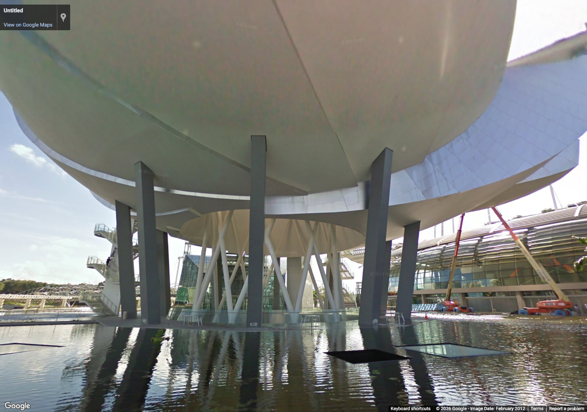
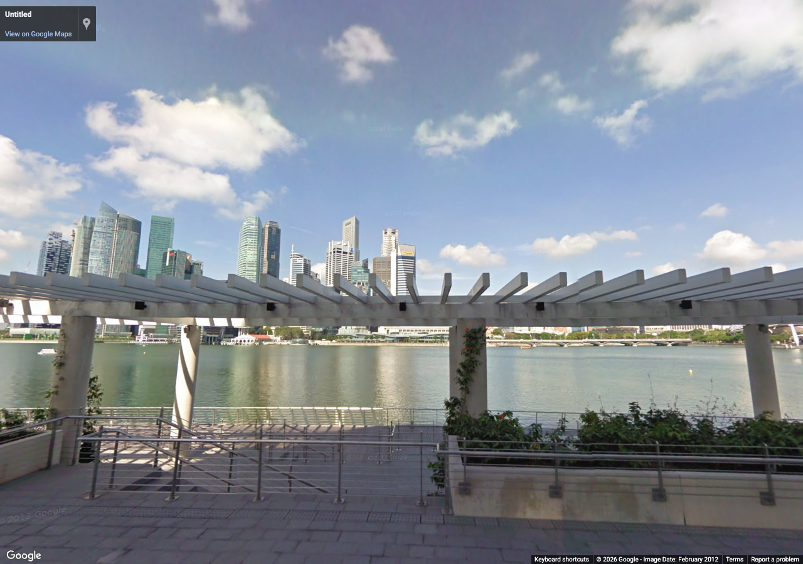
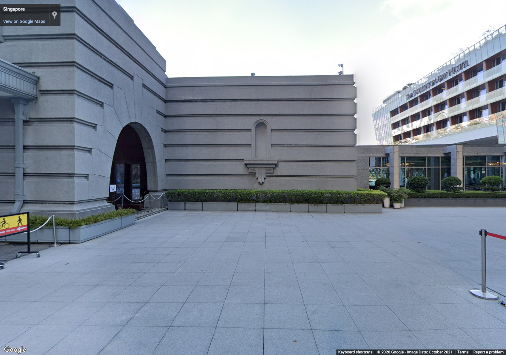
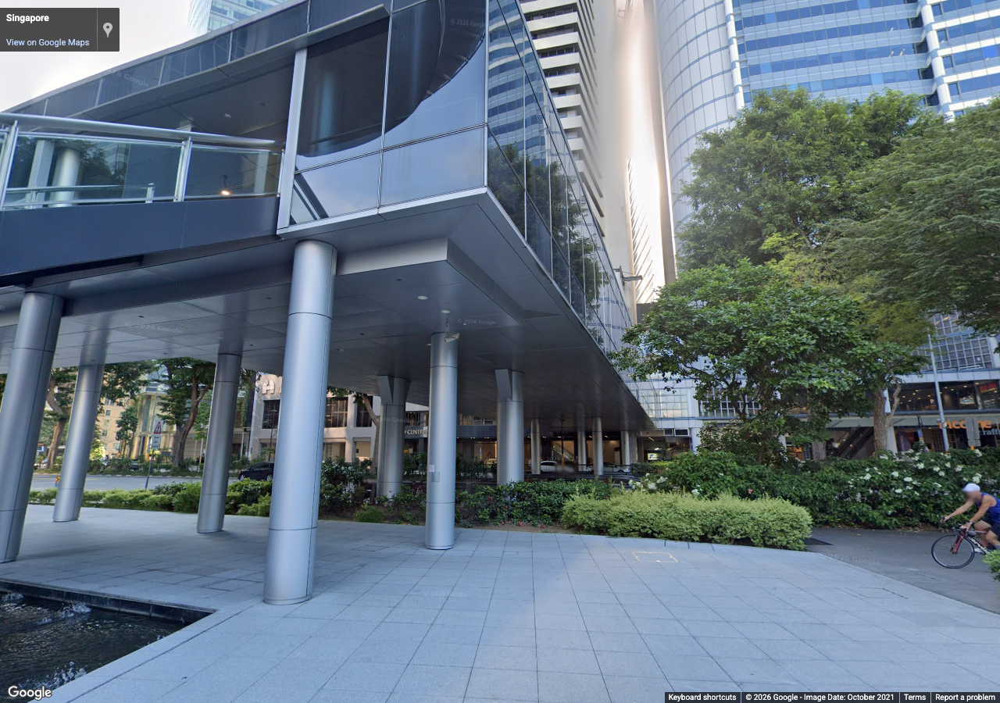
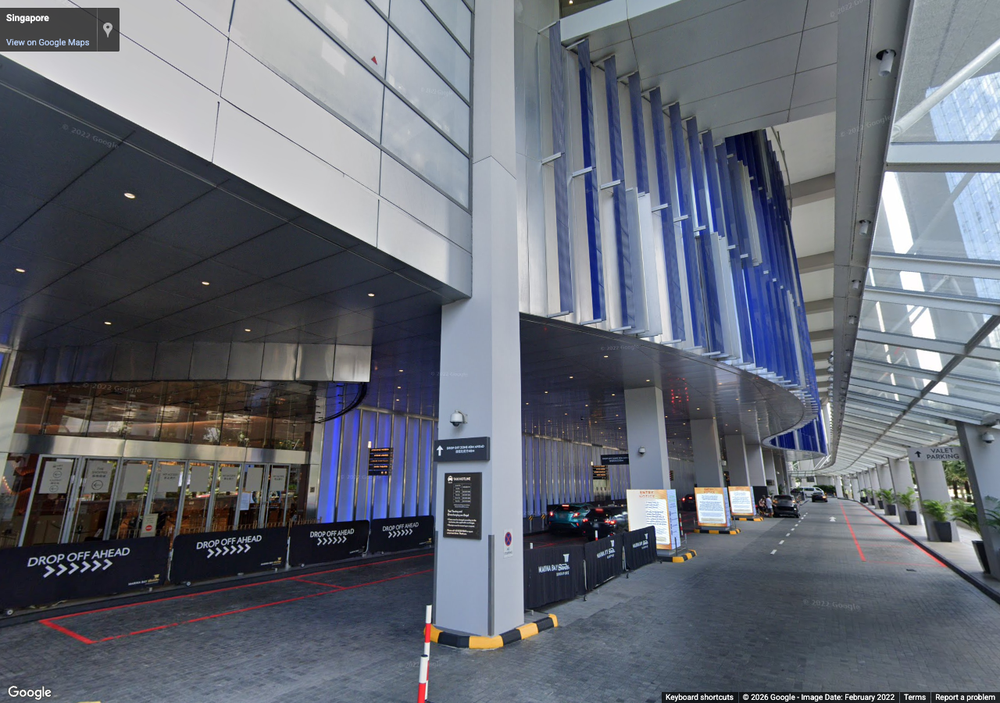
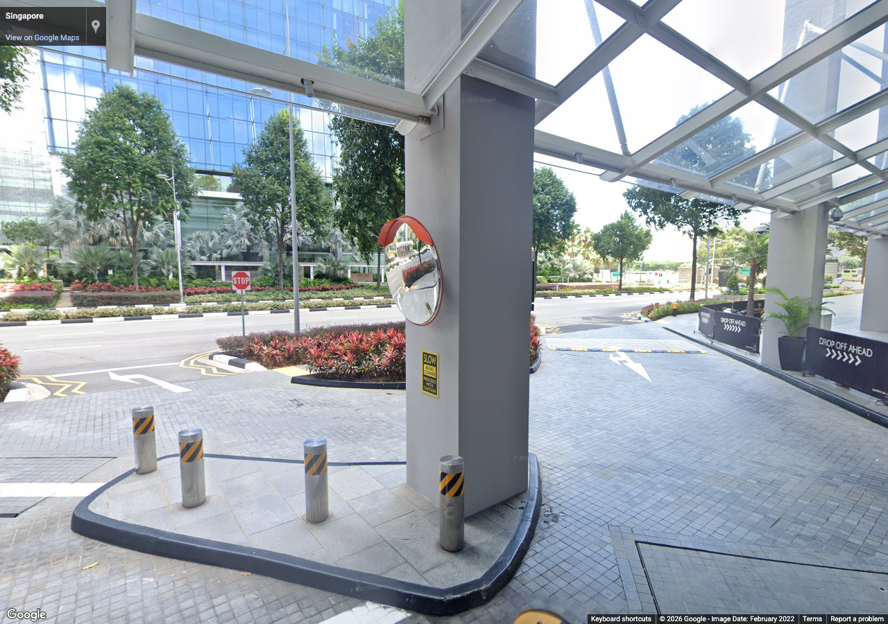
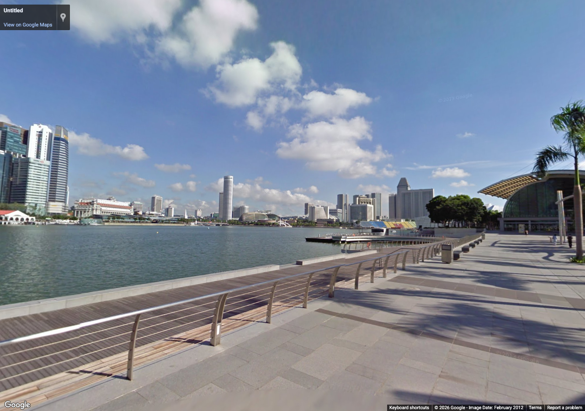
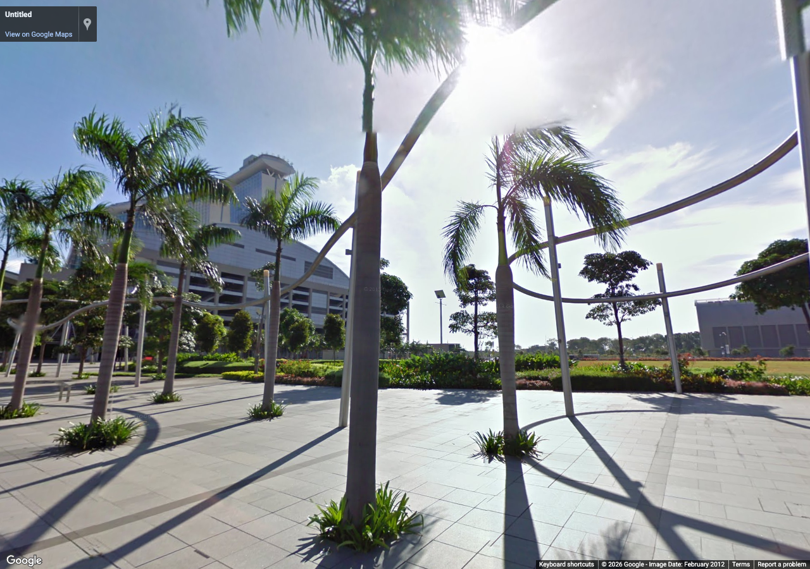

marina-detail-batch-01
Authorized reference screenshots. Attribution retained. Open full-size images to review clarity; capture success alone is not visual acceptance.

museum-shell — Museum shell, support columns and pond edge
Source 2012-02, heading 75°, pitch 18°, zoom 1. Metadata / review

bay-skyline — CBD silhouettes and waterfront pergola
Source 2012-02, heading 270°, pitch 10°, zoom 1. Metadata / review

fullerton-materials — Granite paving and stone/glass material contrast
Source 2021-10, heading 90°, pitch 0°, zoom 1. Metadata / review

fullerton-glazing — Glazing, columns, trees and planting at pedestrian scale
Source 2021-10, heading 270°, pitch 12°, zoom 1. Metadata / review

sands-canopy — Entrance canopy, glazing and vertical fins
Source 2022-02, heading 0°, pitch 15°, zoom 1. Metadata / review

sands-streetscape — Road, curb planting and drop-off markings
Source 2022-02, heading 160°, pitch -5°, zoom 1. Metadata / review

south-waterfront — Promenade railings, paving and distant skyline
Source 2012-02, heading 0°, pitch 5°, zoom 1. Metadata / review

south-palms — Palm spacing, tree pits and overhead shade framework
Source 2012-02, heading 90°, pitch 10°, zoom 1. Metadata / review